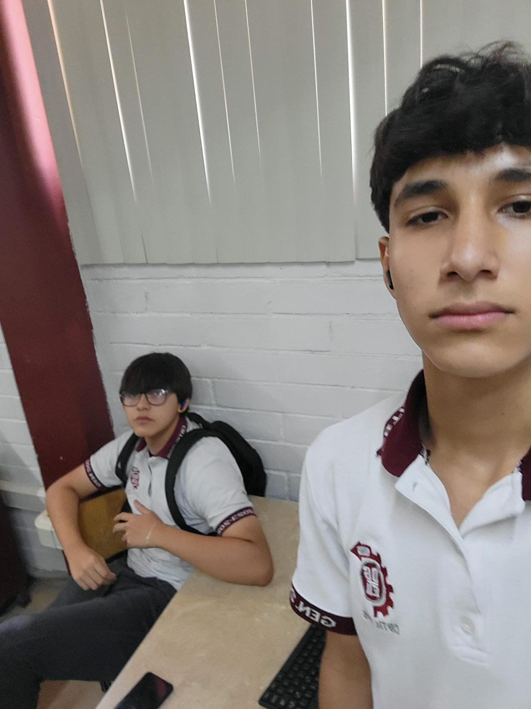

Los que hicieron este programa hermoso
Página Inicial
Historia
Lugares Turisticos
Gastronomia
Cultura y Tradiciones
Programadores
Programadores uhbebe

Omar Contreras - ig omarctrs
Jose Luis Catalan - ig catax438